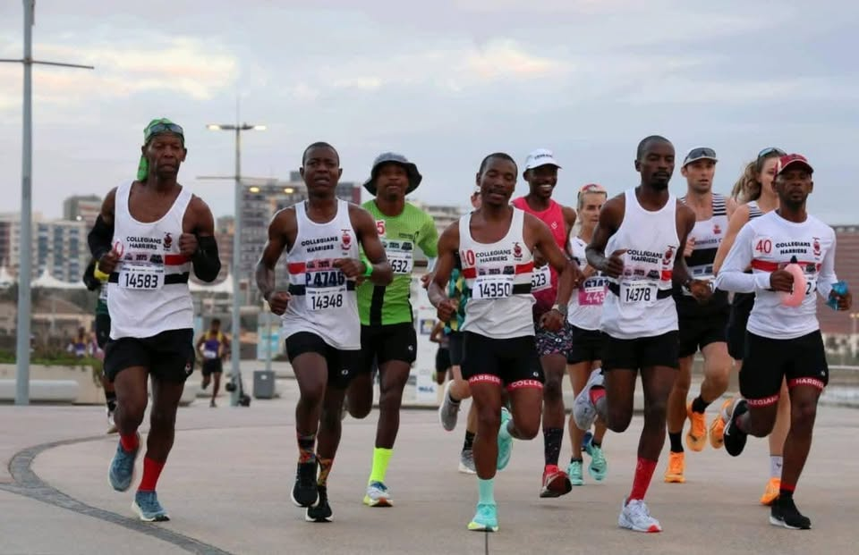

YOUR RUN.
YOUR CLUB.
A running community for road runners, trail runners, social runners and competitors — united by the miles we share.
Running together.
From the start line to the finish, Collegians is powered by the people who show up for one another.

Slide 1 of 2: Together on the road
There is a place
for you here.
Collegians Harriers is about more than race day. It is the early starts, Tuesday kilometres, club colours, shared goals and friendships that keep us moving.
Whether you are chasing a personal best, building towards your first event or simply looking for people to run with, start here.
Meet Collegians Harriers →Run. Race. Belong.
The Longest Day
How far can you go? Our 12-hour endurance challenge for solo runners and teams.
Event details →EVERY WEEKClub Running
Find time trial, training, routes and the information you need for your next club run.
Running information →2026Membership
Join or renew and get current membership information and club documents.
Membership →Proudly Collegians.
A new digital home for a club with a long tradition. Clearer information, stronger event pages and a design built around the people who wear the red, black and white.
Find your place
at Collegians.
New member, returning runner or long-time Harrier — everything you need to get started is in our membership section.
Membership information